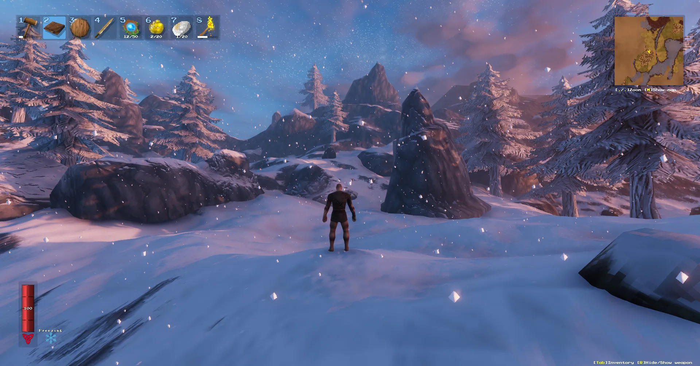

[ AdSense Ad Unit — Responsive Leaderboard ]
Moder Boss Guide — The Dragon of the Mountains
Moder is the fourth Forsaken boss, a massive frost-breathing dragon perched atop the Mountains. This fight is dramatic — Moder alternates between aerial strafing runs and ground combat, forcing you to switch between ranged and melee tactics. Her Forsaken Power is arguably the best quality-of-life power in Valheim: permanent tailwind whenever you sail.
4th
Boss Order
Mountains
Biome
3
Dragon Eggs
🔥
Fire Weakness

1. How to Summon Moder
[ AdSense Ad Unit — Responsive Rectangle ]
Location
Moder's altar is at the peak of a tall mountain in the Mountains biome. Find it via red runestones inside Frost Caves or near ruined stone towers in the Mountains. The altar has three bowl-shaped slots for Dragon Eggs.
Summoning Requirements
| Item | Quantity | How to Get |
|---|---|---|
| Dragon Egg | 3 | Found in nests inside Frost Caves in the Mountains. Each egg weighs 200 lbs — you can only carry one at a time. They cannot go through portals. Use a cart or plan for multiple trips to the altar. |
⚠️ Heavy Load: Dragon Eggs encumber you at 200 lbs each. Build a small base near the altar with a chest, transport all 3 eggs to that chest first, then summon. Or have friends carry one each in multiplayer.
2. Stats & Weaknesses
| Attribute | Value |
|---|---|
| Health | 7,500 HP |
| Damage Type | Frost (breath, ice crystals), Pierce/Slash (claws, bite — ground phase) |
| Weak To | 🔥 Fire — Fire Arrows during air phase, Fire-based weapons |
| Resistant To | Frost, Spirit |
| Immune To | Stagger (cannot be parried or staggered) |
3. Attack Patterns
| Attack | Phase | Description | How to Counter |
|---|---|---|---|
| Frost Breath (Aerial) | Air | Flies overhead and breathes a stream of ice crystals downward in a line. Heavy frost damage. | Run perpendicular to her flight path. The breath is a straight line — dodge sideways, not forward/backward. |
| Ice Crystal Barrage | Air | Hovers and fires multiple ice projectiles at your position. | Use natural terrain or stone pillars as cover. Keep moving — the projectiles have travel time. |
| Claw Swipe / Bite | Ground | Close-range melee attacks when Moder lands. Heavy damage. | Block with Silver Shield or roll. She's slow on the ground — you can get 2-3 hits between her attacks. |
| Frost Breath (Ground) | Ground | Cone of frost breath while grounded. Long wind-up animation. | Roll to the side or behind her. The wind-up is long enough that you can sprint behind her for free hits. |
4. Best Weapons & Strategy
[ AdSense Ad Unit — Responsive Rectangle ]
Recommended Weapons
| Weapon | Phase | Why |
|---|---|---|
| Draugr Fang + Fire Arrows | Air | Fire Arrows exploit her weakness. Draugr Fang (best pre-Plains bow) adds poison DoT. Bring 100+ Fire Arrows. |
| Silver Sword | Ground | High slash damage. Spirit damage doesn't help, but base damage is strong enough. Get 3-4 quick hits when she lands. |
| Frostner | Ground | Despite her frost resistance, Frostner's blunt damage portion still works. The frost slow helps control her on the ground. |
Strategy
- Dig trenches or build cover: Before summoning, use a Pickaxe to dig trenches or raise earth pillars for cover from aerial ice attacks. This makes a massive difference.
- Fire Arrows in the air: When Moder is flying, keep firing Fire Arrows. Even with pierce resistance, the fire DoT adds up. Focus on dodging her attacks between shots.
- Rush in when she lands: The ground phase is your DPS window. Run in with Silver Sword or Frostner and unload. She's slow and predictable on the ground.
- Manage adds: Wolves and Stone Golems may wander into the fight from nearby mountain terrain. Clear the area before summoning and keep an eye out.
- Don't fight at night: Nighttime in the Mountains spawns starred wolves and Fenrings. Fight during the day only.
- Wear Frost Resistance: Wolf Armor chest, Wolf Fur Cape, or Fenris Coat are mandatory for the Mountains. Without frost resist, the biome itself kills you.
5. Pre-Fight Preparation Checklist
- ✅ Draugr Fang or Huntsman Bow + 100+ Fire Arrows
- ✅ Silver Sword or Frostner — ground phase melee weapon
- ✅ Wolf Armor (chest/cape for frost resistance) or Fenris Set
- ✅ 3 best foods: Wolf Skewer + Eyescream + Turnip Stew or Sausages
- ✅ Medium Healing Mead (3-5 bottles)
- ✅ Frost Resistance Mead as backup
- ✅ Dig trenches or build stone pillars for cover before summoning
- ✅ Clear surrounding area of Wolves, Golems, and Drakes
- ✅ Fight during daytime only
6. Forsaken Power & Rewards
[ AdSense Ad Unit — Responsive Rectangle ]
| Reward | Details |
|---|---|
| Moder Trophy | Mount on Sacrificial Stones. Her Forsaken Power is game-changing for exploration. |
| Dragon Tear | Crafting material. Used to build the Artisan Table — required for the endgame crafting stations (Spinning Wheel, Windmill, Blast Furnace). |
| Forsaken Power: Moder | Forces the wind to always be a tailwind for 5 minutes. You will never have to paddle against the wind while sailing. 20-minute cooldown. Arguably the best quality-of-life power in Valheim — essential for long-distance sailing and metal transport. Turns longship journeys from 20 minutes of paddling into 5 minutes of full-sail speed. |
7. After the Fight
- Craft the Artisan Table (2 Dragon Tears + 10 Wood)
- Build a Blast Furnace, Spinning Wheel, and Windmill
- Process Black Metal Scrap (from Fulings in the Plains) into Black Metal bars
- Process Flax into Linen Thread for Padded Armor
- Prepare for Yagluth (5th boss in the Plains)
← Previous: Bonemass | Next Boss: Yagluth →
[ AdSense Ad Unit — Responsive Rectangle ]
Was this guide helpful?